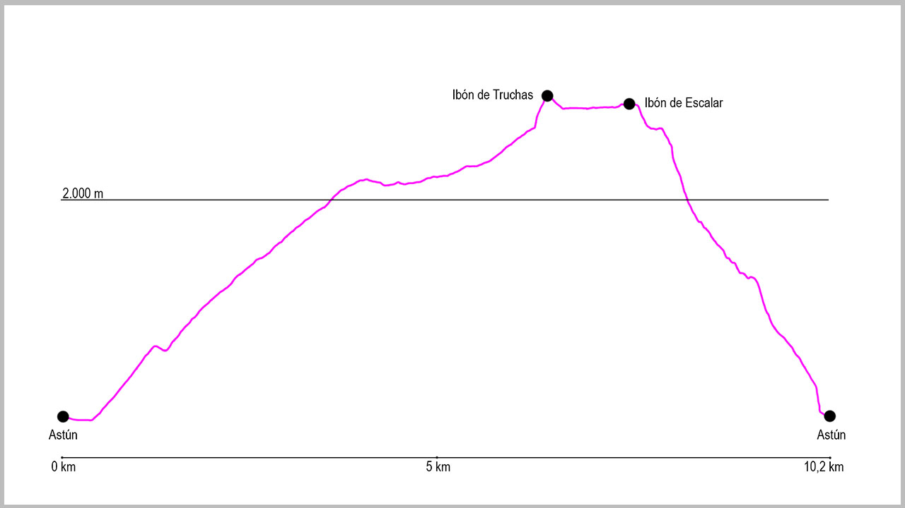

El punto de partida será el parking de la estación de esquí de Astún. Desde el final del aparcamiento cogeremos las escaleras que salen a nuestra izquierda y una vez subidas, nos dirigiremos hacia el norte pasando por la izquierda del telesilla de Truchas. La bordearemos para llegar a un segundo telesilla desde donde sale una pista que empieza en dirección sur, pero que enseguida gira a la izquierda para adentrarse en el valle. Esta será la pista que seguiremos casi todo el recorrido.
Cuando llevemos poco más de un kilómetro la pista gira a la derecha 180 grados, importante no seguir recto en este punto. Desde aquí, la pista va ganando poco a poco altura hasta que llegamos a una primera bifurcación que sale a nuestra izquierda hacia un edificio rojo. La obviaremos y seguiremos de forma ascendente. Poco después pasará lo mismo pero al revés, siguiendo esta vez en la bifurcación a nuestra izquierda.
A unos 500 metros después del último cruce, en una curva de 180 grados a la derecha y con un pequeño lago a la derecha, sale otra pista a nuestra izquierda que deberemos tomar. Esta será la pista que nos llevará hasta el primer ibón: el de Truchas. Pasaremos a su izquierda y seguiremos la pista en dirección noroeste para seguir hasta el siguiente ibón: el de Escalar, momento en el cual acaba la pista. En este momento seguiremos en la misma dirección y tras un pequeño descenso rodearemos a nuestra izquierda el ibón.
Justo antes de llegar al sobradero del mismo, tomaremos un camino que sale a nuestra izquierda para afrontar la bajada hasta el punto de inicio. En el primer tramo tendremos que extremar la precaución, pero enseguida llegaremos a un camino bastante cómodo que baja por la margen izquierda del río Aragón. Seguiremos el descenso hasta llegar a otra pista que nos conducirá de nuevo hasta la Estación y posteriormente ya al aparcamiento inicial.
